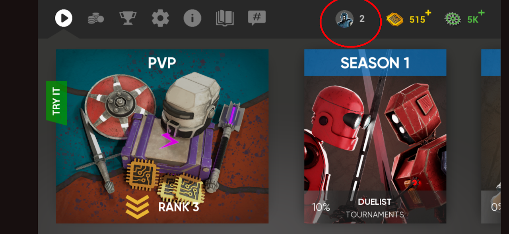
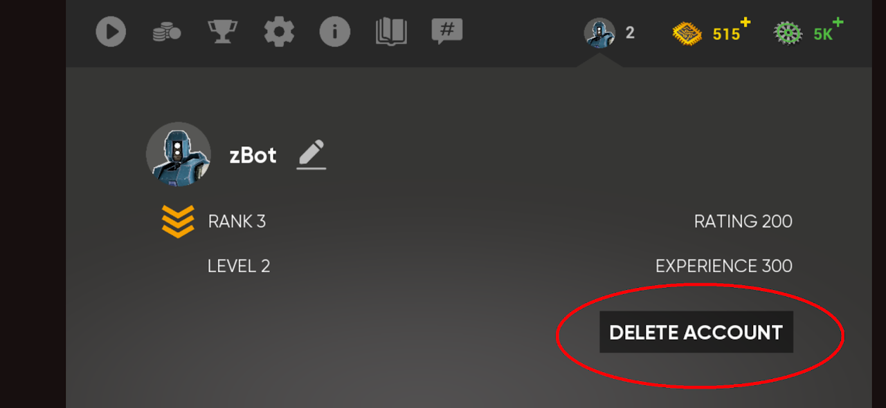
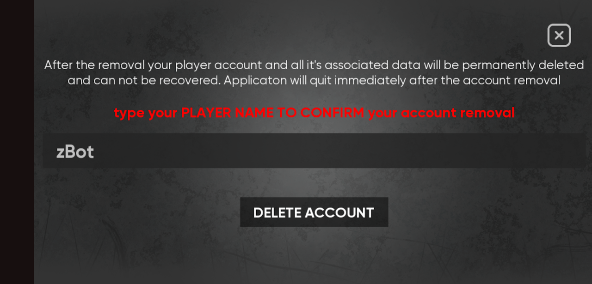

Player Data
Casual Blade Player Account Deletion
To remove your Casual Blade player account use Casual Blade application.
After the deletion your player account and all associated data will be permanently lost and can not be recovered!
01
To delete the account in the application tap the profile icon at the game main screen (see the red circle at the screen shot)

02
At the profile screen tap the "Delete account" button

03
At the account deletion screen fill in your player name and tap "Delete account" button. After data will be deleted the application will quit automatically.

If you need help with your account removal please write a mail to info@nimbleblade.games with "ACCOUNT DELETION" subject